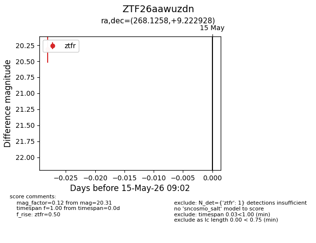
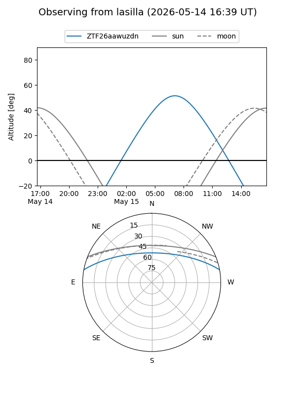
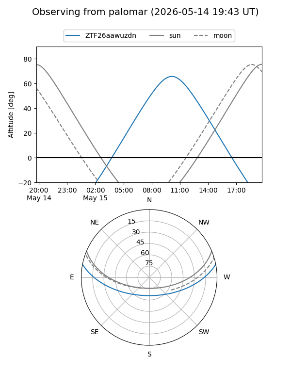

ZTF26aawuzdn
Target ZTF26aawuzdn at 2026-05-15 09:04
Aliases and brokers:
FINK: link
Lasair: link
ALeRCE: link
alt names
ZTF26aawuzdn (ztf,fink_ztf)
Coordinates:
equatorial (ra, dec) = 268.1258,+9.22293
equatorial (HMS+DMS) = 17:52:30.20,+09:13:22.54
galactic (l, b) = (34.6225,+17.24777)
Flags:
Photometry:
last ztfr=20.31
1 ztfr detections
Lightcurve

Visibility


Additional plots